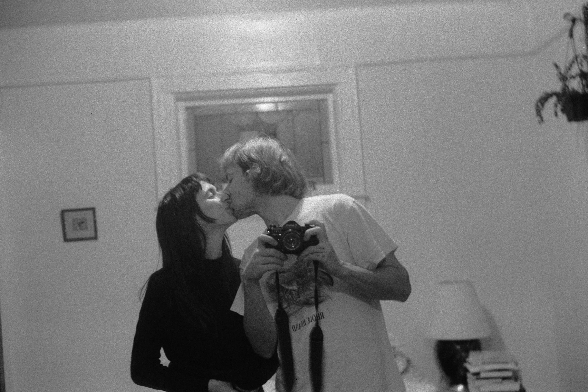

Eli & Sophia are getting married!
at Camp Bonnie Brae in
Otis, Massachusetts
Friday, August 22 to Sunday, August 24, 2025
Ceremony and Reception on Saturday, August 23, 2025
Our Story
We met on New Year's Eve at a small party on the cusp of 2019. Sophia had been living in NYC at the time, Eli in Providence, and both ended up coming to New Haven for the holiday night. Somehow, inexplicably to our friends, we hadn’t met each other before. Maybe it was the moonlight and moody December fog that evening, or the sense of serendipity in finding a new someone so cute and lovely among a group of friends we each knew well, or maybe Cupid had spiked the drinks that night… who knows! In any case, we kissed well before midnight struck, and from then on, it’s been us.
Camp Bonnie Brae
Located in East Otis, Massachusetts, Camp Bonnie Brae is an overnight Girl Scout Camp overlooking Big Pond. It’s the oldest continuously operating Girl Scout camp, founded in 1919. Click here to see some cool archival footage of the camp!
Getting There
55 minute drive from Bradley International Airport in Hartford, CT
45 minute drive from Springfield, MA Amtrak station
2 hour 15 min drive from Providence
3 hour drive from NYC
2 hour 30 min drive from Boston
There is parking at camp, but we do recommend sharing a ride with other guests, to save on parking space, and to be kind to our Earth. We’re compiling a list of people with extra space in their cars, and those who are in need of a ride!
Click THIS LINK to see if you can share a ride to/from the airport, train station, NYC, Providence, Boston, or wherever!
Please note that Ubers/Lyfts are not super reliable out in this area of the Berkshires.
We made a playlist for you to listen to on your drive :)
Lodging at Camp:
We’re really excited to offer free, on-site lodging for any guests who would like to rough it with us at camp.
Camp Bonnie Brae has a wiiiiide variety of lodging options.
The Tree Houses, Yurts, Platform Tents
Each of these cabins/yurts/tents sleep 6-8 people in bunk beds. Bathrooms are a short walk away, with showers and composting toilets!
Leadership Lodge
This large, recently built lodge includes bathrooms inside and a large kitchen. This lodge has electricity and sleeps 20 people in a wrap-around sleep loft.
The Big House and Anne’s Boat House
These two lodges have electricity, inside bathrooms, and each has a large kitchen. There are no bedframes, but both have plenty of mattresses that can be arranged on the floor.
Sue’s House
Sleeps 10 on bunk beds and has a small kitchen.
Jerry’s Cabin
Sleeps 4 on cots and has a small kitchen.
Pitching a tent!
You’re welcome to bring your own tent and pitch it in a cozy spot in the forest.
For a more detailed breakdown of the campsite, see Camp Bonnie Brae’s amenities list here.
If you do choose to stay with us at camp, you’ll find a notation area in your RSVP, where you can let us know any of your accessibility needs and if there are other guests you’d like to be bunked with. Unless you’re pitching a tent, we’ll assign you a cabin, and do our best to meet everyone’s needs.
Big Pond
Camp Bonnie Brae is oriented around Big Pond, a foolishly named lake. It’s wonderful for swimming! We’ll also be able to use the camp’s kayaks for a few hours! We will hire a lifeguard for a few hours of safe swimming and boating.
Map of Camp Bonnie Brae
Sorry guys, we are not allowed to use the archery range.
What to Bring:
- Please bring a sleeping bag, blankets, sheets, and a pillow. Even in August, it can get chilly at night by the water! We recommend bringing more blankets than you’d think you’d need, just in case. The bunks are twin XL, if you’re bringing sheets.
- Swimsuit and towels!
- Snacks. Please note that all foodmust be stored securely in the refrigerators at camp, not loose in any tents or cabins. There are fridges in the Big House, Leadership Lodge, and Dining Hall that all can use. This is a camp in a forest, and there is apparently a particularly comfortable bear around. Feel free to bring whatever snacks or food you’d like, just remember to label if you don’t feel like sharing, so other’s don’t mistake it for communal food!
- Bug spray and sunscreen. It can get reallyyy mosquito-y.
- Flashlight! You’ll need this to find your cabin at night.
- Comfortable shoes.
- Raincoat or umbrella, just in case.
- Folding chair. Our ceremony location will be in the forest, and so we’ll all need to BYO-chair. For those traveling via car, please bring spare for those traveling via train or plane.
What you carry in, you must carry out! We’ll give a checklist of how to leave your cabin in good condition when we all head out on Sunday.
Weekend Schedule
Even if you don’t stay with us overnight at camp, all are invited to join us for all meals and activities at camp!
Friday
3:00 PM - 5:00 PM: Arrival & Check-In
Settle into cabins or tents, relax, and explore the camp.
5:30 PM - 9:30 PM: Welcome Veggie BBQ and Campfire
Casual vegetarian dinner with grilled foods, sides, and drinks, followed by a cozy campfire.
Saturday
9:00- 11:00: Breakfast
Sip on some coffee and tea and serve yourself some simple oatmeal, yogurt, or cereal.
Location: Dining Hall
11:00-1:00
Safe swimming and boating in Big Pond! During this time, we’ll have a lifeguard present.
12:00-2:00: Lunch
Build your own low-frills vegetarian sandwich at our sandwich bar.
Location: Dining Hall
3:00: Wedding Ceremony
Location: TBD, somewhere outside
4:00-5:30: Cocktail Hour
Join us on the deck of the dining hall for appys and dinks.
6:00-Whenever!: Reception
Dinner, speeches, and dancing under the stars
Sunday
9:00-1:00: Bagel Brunch
Bagels, bagels, bagels.
1:00-2:00: Goodbyes!
Pack up, make sure your cabin is good-to-go, and give everyone a big kiss goodbye.
Camping Guide
RSVPs
Other Lodging
We hope you’ll stay with us at camp, and understand if you want or need a more traditional sleeping arrangement.
- We recommend starting with the home shares. The Berkshires have loads of Air B&Bs and VRBOs.
- There are a few hotels in the surrounding towns too, here are a just few options we have encountered:
- Fairfield Inn & Suites by Marriot, Great Barrington, MA
- Hillside Garden Inn, Sandisfield, MA
- New Boston Inn, Sandisfield, MA
- East Rock Inn, Great Barrington, MA
FAQs
Q: Is there parking at camp?
A: Yes! There is a decent amount, but we do recommend ridesharing with other guests. Please see this link to see if there are other guests who you can easily carpool with, to save parking space and our planet.
Q: What should I wear to the ceremony and reception?
A: Whatever makes you happy! We encourage color. Our wedding will take place outdoors, on dirt, so beware of sinking stilettos.
Q: Can I bring a plus one?
A: We’d love to accommodate everyone, but due to capacity limits at camp, we won’t be able to include additional guests. You’ll know if you have a plus one by a tab on your RSVP!
Q: Can I bring my kids?
A: Yes! Sophia is a Montessorian and therefore a firm believer that children should be included in life. If you didn’t see your child(ren)’s name on your RSVP, please reach out so we can correct our mistake.
Q: Will there be vegan/gluten-free/other dietary options?
A: Please let us know in your RSVP of any allergies or dietary restrictions. As we are both vegetarian, the wedding will be as well, and we will try our best to accommodate any other restrictions, except for all-meat diets lol.
Q: What’s the weather like?
A: The weather in Otis, MA in August is typically pretty hot and muggy, but be prepared for anything! We recommend checking the forecast closer to the wedding date and packing accordingly. Even if it’s forecasted to be hot, please pack a light layer just in case.
Q: Is the camp ADA-accessible?
A: We will hire a golf cart to help people who need it to get around camp. Please note there are no officially ADA-accessible bathrooms on site, but there are bathrooms that do not require going up any steps.
Q: Were either of you scouts as kids?
A: Nope! Neither of us even ever went to a real sleepaway camp.